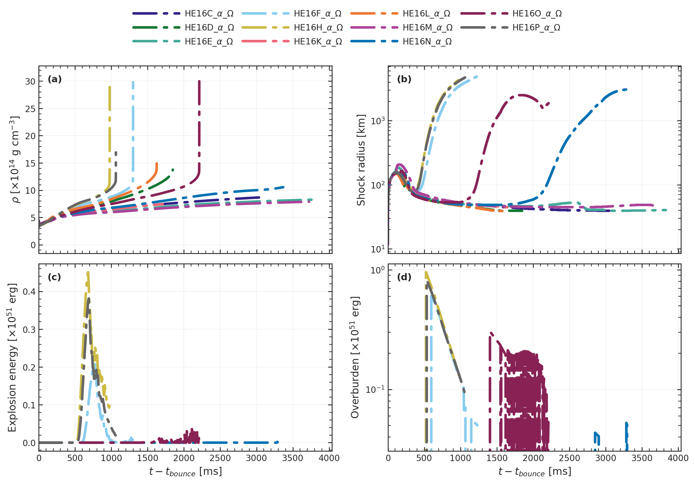
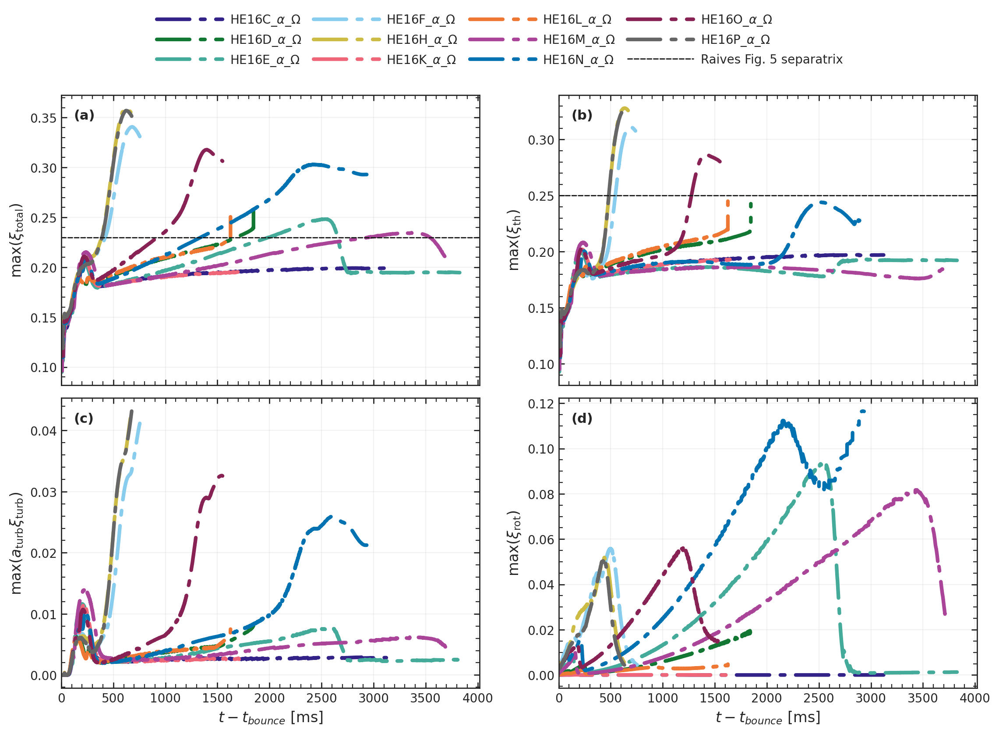
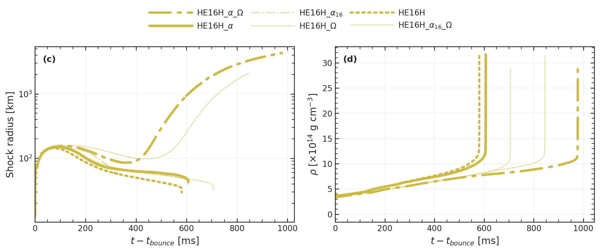
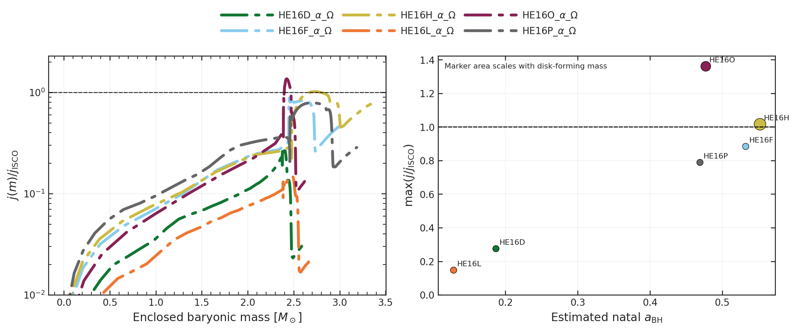

Research Project
1D Black Hole Formation
GR1D+STIR models of rotating helium-star collapse, tracking how progenitor structure, angular momentum, and turbulence shape shock evolution, black hole formation, and pre-engine collapsar conditions.
Project Team
Project Overview
This project uses GR1D with energy-dependent neutrino transport and the STIR turbulence model to study how rotating helium-star progenitors evolve through collapse, bounce, post-bounce accretion, and eventual black hole formation in the collapsar regime.
In Until I Collapse, the main question is not just whether a model reaches black hole formation, but how the collapse path changes once rotation and turbulence are added to the same neutrino-transport framework. Across the HE16 suite, progenitor structure sets the broad ordering of outcomes, while rotation provides the dominant non-thermal support and turbulence changes how long the most promising models resist collapse.
The manuscript also shows that black hole formation alone is not enough to identify a good collapsar candidate. The clearest 1D pre-engine cases are the models that both collapse and still retain exterior material with specific angular momentum above the ISCO threshold. In the present suite, HE16O is the strongest candidate and HE16H remains a more marginal case.
Manuscript Figures
These plots come directly from the current Until I Collapse figure set. Together they summarize the broad HE16 outcome sequence, the support budget behind the most promising models, a representative HE16H control comparison, and the final collapsar diagnostics.




Current Results Summary
- Progenitor structure sets the broad ordering of outcomes across the HE16 sequence.
- Rotation is the dominant non-thermal contribution to the support budget in the models closest to explosion-like behavior.
- Turbulence changes how long favorable rotating models resist collapse and helps produce the clearest secondary shock expansion.
- Black hole formation by itself overpredicts collapsar viability; the angular momentum content of the remaining exterior material still matters.
- Within the present 1D suite, HE16O is the clearest collapsar-like candidate, with HE16H remaining marginal.